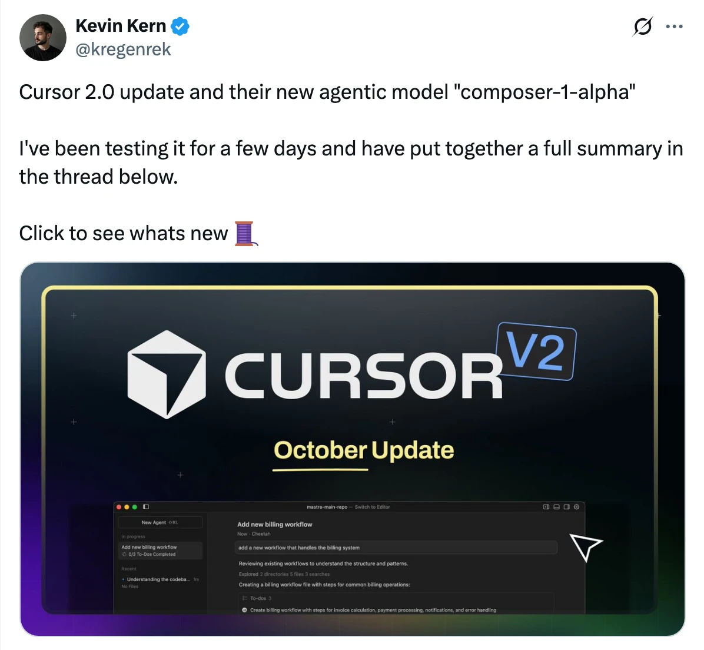
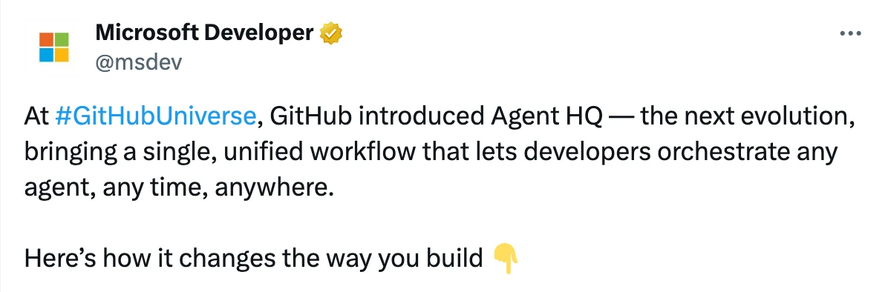
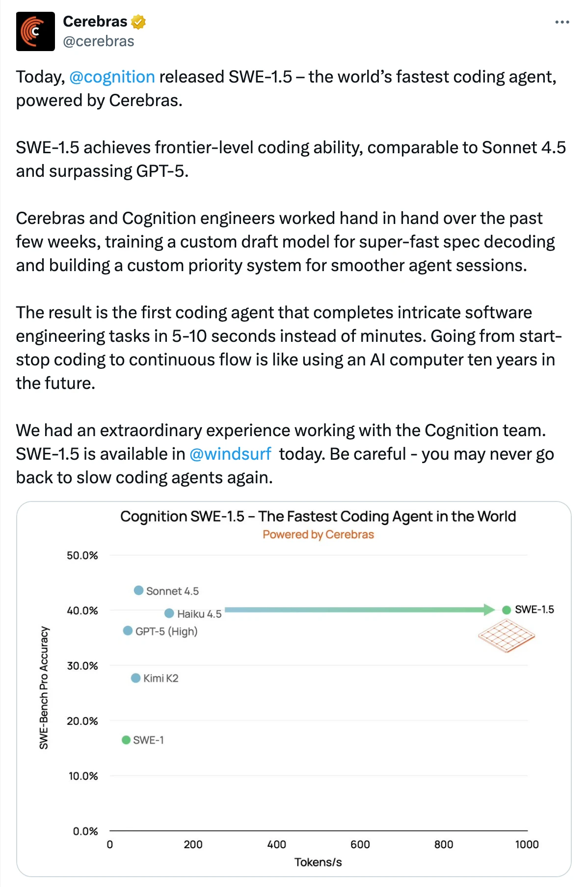
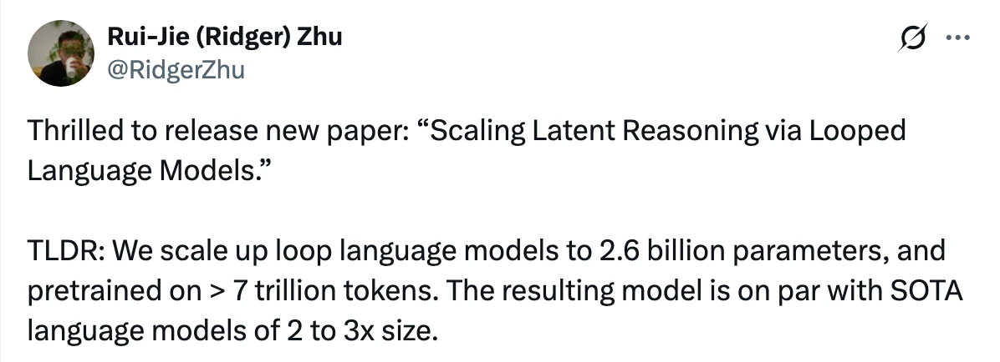
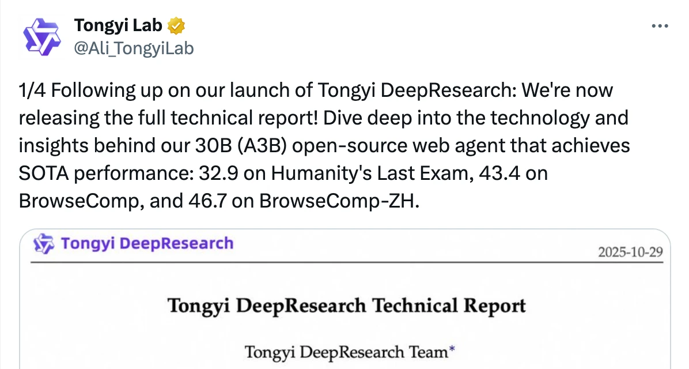
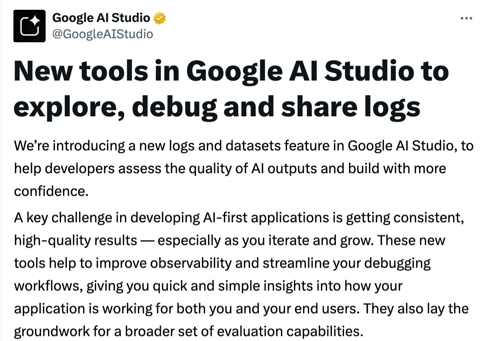
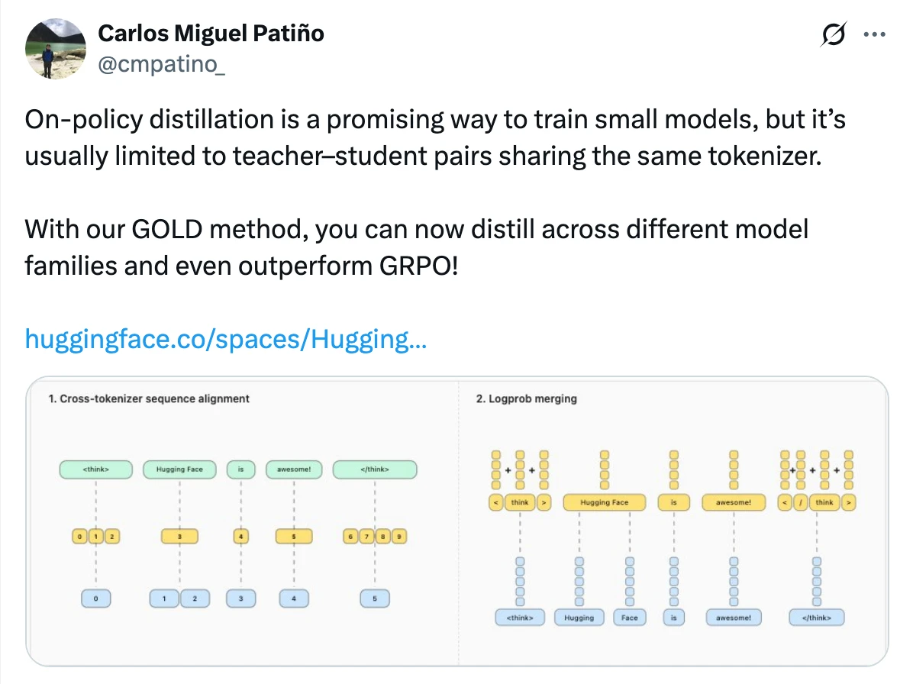
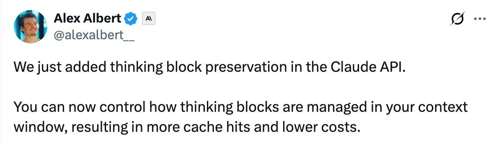
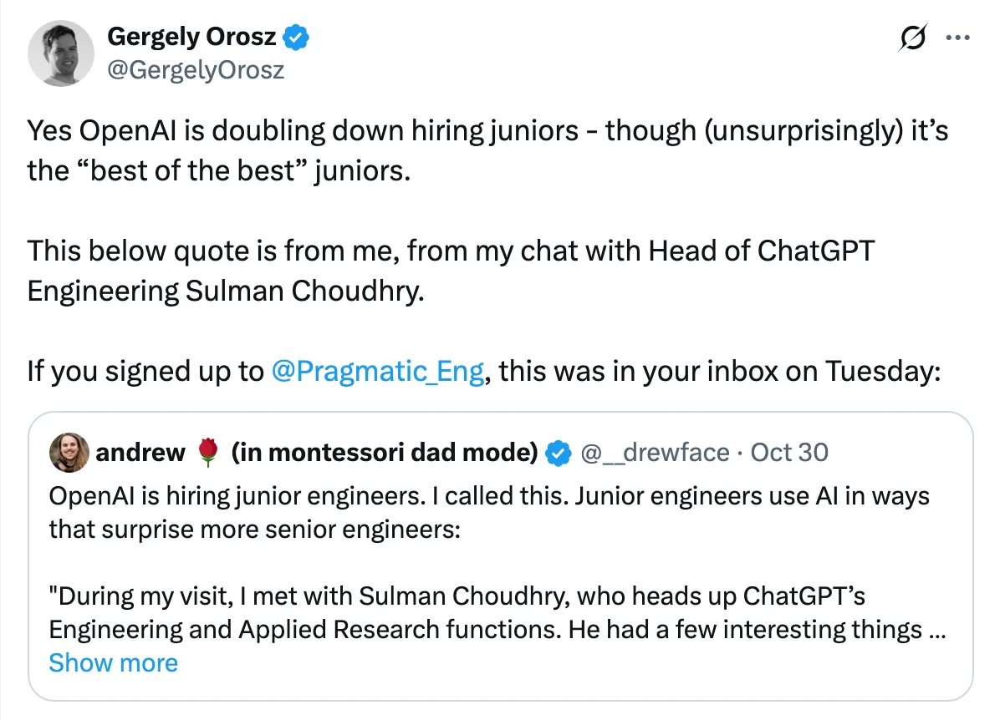

📚
view all previous issues
✨ see you next week!
![Microsoft has introduced **Teams Mode for Microsoft 365 Copilot**, enabling users to transform individual Copilot AI chats into collaborative group chats within Microsoft Teams. This new feature allows you to easily add colleagues to Copilot conversations, control which messages are shared, and bring Copilot into existing group chats to help teams research, draft, coordinate, and complete tasks together. Each participant’s data access respects Microsoft 365 permissions, ensuring privacy and security.Teams Mode is now available in public preview for Copilot-licensed users on desktop, mobile, and web. To get started, users can add collaborators in the Copilot app or @mention Copilot in a Teams chat. Example use cases include strategy planning, marketing campaigns, quarterly goals, business reviews, and onboarding, with Copilot providing AI-powered support throughout group workflows. For more information, users can visit the Microsoft 365 Copilot support page or community blog.](assets/slide_2025_44/introducing-teams-mode-for-microsoft-365-copilot-microsoft.webp)
![Microsoft has announced "Researcher with Computer Use" in Microsoft 365 Copilot, an enhancement that enables Copilot to autonomously research, reason, and execute tasks using a secure virtual computer in the cloud. This feature allows Copilot to access and interact with public, gated, and interactive web content, including subscription-based materials and authenticated sites. Users can leverage this to gather premium information, carry out actions in web interfaces, and generate complex artifacts like presentations or code, all while maintaining control and ensuring enterprise data security. The virtual environment is sandboxed, ephemeral, and equipped with safety classifiers and admin controls to safeguard sensitive data and prevent security risks.The system architecture chains together a visual browser, text browser, terminal, and Microsoft Graph, orchestrated by Copilot’s agent. Security measures include strict sandboxing, real-time user observability, explicit consent for actions, and admin governance via the Microsoft Admin Center. Benchmark evaluations show significant improvements in Copilot’s autonomous research capabilities, including a 44% performance boost in multi-step browsing tasks. The feature is rolling out to Microsoft 365 Copilot licensed customers via the Frontier program.](assets/slide_2025_44/introducing-researcher-with-computer-use-in-microsoft-365-copilot-microsoft.webp)
![Cursor has launched Cursor 2.0, featuring their first proprietary coding model, Composer, and a redesigned multi-agent interface. Composer is a fast, low-latency model optimized for agentic coding, capable of handling complex, multi-step tasks and large codebases through advanced semantic search. Early users report improved iteration speed and reliability with Composer.The new interface in Cursor 2.0 centers around agents rather than files, allowing users to run multiple agents in parallel for more efficient problem-solving. Enhanced workflows support easier code review, in-depth exploration, and integrated testing via a native browser tool, enabling agents to refine their output until correct. Cursor 2.0 is now available for download.](assets/slide_2025_44/introducing-cursor-2-0-and-composer-cursor.webp)
![GitHub has announced Agent HQ at Universe 2025—a unified workflow platform that enables developers to orchestrate and manage multiple coding agents (from providers like Anthropic, OpenAI, Google, Cognition, xAI, and more) natively within GitHub as part of a paid Copilot subscription. Agent HQ introduces a "mission control" command center for assigning, steering, and tracking agent tasks across GitHub, VS Code, mobile, and CLI, allowing parallel task management and integration with popular tools like Slack, Jira, and Microsoft Teams. New features include granular branch controls, agent identity management, one-click merge conflict resolution, and expanded integrations.For developers, Agent HQ brings enhanced planning through features like Plan Mode in VS Code, custom agent creation using AGENTS.md, and the ability to leverage the GitHub MCP Registry for specialist tools. Enterprises benefit from improved governance and transparency with expanded code quality checks, automated code reviews, a Copilot usage metrics dashboard, and an agent control plane for policy and access management. GitHub emphasizes that these advancements aim to make AI-powered development more seamless, collaborative, and secure—empowering developers to work faster and with greater confidence using familiar GitHub workflows.](assets/slide_2025_44/agent-hq-github.webp)
![Kimi Linear introduces a novel attention architecture that surpasses traditional full attention in both speed and performance, making it a drop-in replacement with open-sourced KDA kernels. The architecture achieves up to 75% reduction in KV cache usage and up to 6x faster decoding at a 1 million token context length.Key innovations include Kimi Delta Attention, a hardware-efficient linear mechanism, and the first hybrid linear design to consistently outperform full attention. The release features comprehensive empirical validation, open-source kernels, vLLM integration, and model checkpoints, signaling a significant advancement for agentic-oriented attention systems.](assets/slide_2025_44/kimi-linear-tech-report.webp)
![Kimi has introduced a new "next-gen" model architecture called Kimi-Linear, which significantly reduces memory usage (by up to 75%) and achieves up to 6.3× higher decoding throughput compared to previous models. Kimi-Linear integrates MLA (Multi-Head Linear Attention) and KDA (Kimi Delta Attention, a refined Gated-DeltaNet) layers in a 3:1 ratio, resulting in 1.16x higher efficiency over the MLA baseline during compute-optimal training. It outperforms both MLA and GDN-H baselines on various benchmarks, particularly excelling in long-context and reasoning-intensive tasks.Notably, Kimi-Linear omits positional encoding (NoPE) in its interleaved MLA layers, instead leveraging a dedicated position-aware mechanism alongside global NoPE attention to maintain strong performance on long-context tasks. The findings suggest that Kimi-Linear is especially effective for reasoning-focused, long-form generation under reinforcement learning, hinting at its potential as a foundation for training larger, more capable reasoning models in the future.](assets/slide_2025_44/kimi-linear-memory-efficient-large-language-model.webp)
![Cognition has announced the release of SWE-1.5, a cutting-edge agent model for software engineering with hundreds of billions of parameters. SWE-1.5 sets a new benchmark for coding speed, achieving up to 950 tokens per second—significantly faster than previous models—thanks to infrastructure partnerships and custom system optimizations. The model was developed using end-to-end reinforcement learning in high-fidelity coding environments, with real-world dogfooding and agent harness co-design driving both speed and code quality improvements.SWE-1.5 is now available in Windsurf and powers use cases such as codebase exploration, app development, and rapid configuration edits. The Cognition team focused on building robust environments, optimizing for soft factors like code quality, and leveraging novel infrastructure (including GB200 NVL72 chips and VM hypervisors) to ensure high concurrency and reliability. The release demonstrates that speed and intelligence can be achieved together in coding agents, and Cognition plans to continue advancing these capabilities in future iterations.](assets/slide_2025_44/introducing-swe-1-5-our-fast-agent-model-cognition.webp)
![SWE-1.5 is a newly released frontier-scale AI model with hundreds of billions of parameters, offering exceptional speed (up to 950 tokens per second) and performance. It surpasses GPT-5-High on the SWE-Bench-Pro benchmark, is significantly faster than Sonnet 4.5 and Haiku 4.5, and more than doubles the benchmark performance of its predecessor, SWE-1.The model was trained using reinforcement learning on a large cluster of thousands of GB200 chips, potentially making it the first public model trained on the new GB200 NVL72 generation. Further training details are available in an accompanying thread.](assets/slide_2025_44/swe-15-frontier-scale-ai-model-release.webp)
![OpenAI has released gpt-oss-safeguard, a set of open-weight reasoning models for safety classification tasks, available in two sizes (120b and 20b) under the Apache 2.0 license. Unlike traditional safety classifiers that rely on large labeled datasets and retraining for policy changes, gpt-oss-safeguard models use developer-provided policies at inference time to classify content and explain their reasoning. This approach allows for quick policy iteration, greater flexibility, and nuanced handling of emerging or complex safety risks, making it suitable for domains where high-quality, explainable labels are important.The models were developed in collaboration with partners like ROOST and are evaluated to perform competitively on internal and public benchmarks. While dedicated classifiers trained on extensive datasets may outperform gpt-oss-safeguard in some scenarios, these models offer a scalable, adaptable solution for organizations seeking customizable safety tools. OpenAI encourages feedback from the research and safety community to further improve these open safety models.](assets/slide_2025_44/introducing-gpt-oss-safeguard-openai.webp)
![MiniMax has open-sourced the M2 model, optimized for agentic and coding tasks, offering strong performance in developer workflows and compatibility with various coding tools and applications. The model is engineered for robust handling of complex, multi-step toolchains and demonstrates advanced coding capabilities.M2 is available globally for free for a limited time through MiniMax Agent and API. It is marketed as being significantly cheaper (8% of Claude Sonnet's price) and approximately twice as fast, thanks to efficient parameter activation.](assets/slide_2025_44/minimax-m2-open-source-agent-code-model.webp)
![The MiniMax M2 Tech Blog explains why the M2 model uses full attention rather than more efficient linear or sparse attention mechanisms. The team found that, although efficient attention architectures promise lower resource consumption, in practice they currently lag behind full attention in terms of real-world quality, especially for complex reasoning and diverse tasks. Key challenges include inadequate evaluation benchmarks, scale-dependent weaknesses, and the immaturity of infrastructure for non-standard attention types. The authors emphasize that reliable evaluation and robust infrastructure are essential before efficient attention can truly outperform full attention in production settings.The blog also notes that as large language models scale and context windows grow, the benefits of efficient attention may become more relevant, but significant challenges remain—such as handling numerical precision, prefix caching, and speculative decoding efficiently. The team advocates for better data, improved evaluation methods, and more mature infrastructure to unlock these future gains. An addendum discusses an unsuccessful experiment with SWA inference, highlighting the difficulty in maintaining performance with hybrid attention architectures as context length increases.](assets/slide_2025_44/minimax-m2-tech-blog-why-full-attention-model.webp)
![MiniMax-M2 is a new large language model (LLM) that reverts to full attention mechanisms for improved performance, differing from its predecessor MiniMax-M1 and aligning more closely with models like Qwen3. Its main architectural distinction is the use of “per-layer” QK-Norm, where each attention head in every transformer block gets a unique normalization, rather than sharing it across heads, potentially enhancing model expressiveness.Additionally, MiniMax-M2 includes a disabled sliding-window attention setting and employs Mixture-of-Experts (MoE) sparsity without shared experts, making it twice as sparse as Qwen3. At similar model sizes, MiniMax-M2 uses fewer active experts per token during inference, which could improve efficiency. Overall, aside from the unique QK-Norm implementation and increased sparsity, MiniMax-M2’s architecture remains largely similar to Qwen3.](assets/slide_2025_44/minimax-m2-vs-qwen3-architecture-comparison.webp)
![Minimax M2 utilizes a GPT-OSS-like architecture, combining Full Attention with Sliding Window Attention (SWA), and introduces innovations such as unique, learnable RMSNorm for each attention head and separate RoPE theta configurations for its attention mechanisms. It also incorporates QK Norm for improved performance.The choice to use FlashAttention over Linear Attention is due to its effectiveness and compatibility with low-precision training and inference (FP8/FP4), whereas Linear Attention does not support such precision. This highlights a trend toward more rigorous and practical research in AI labs.](assets/slide_2025_44/minimax-m2-architecture-fun-facts.webp)
![The text discusses best practices and findings from the M2 project’s Reasoning team on creating high-quality data to improve reasoning abilities in AI models. Key points include the importance of logically complete but non-redundant Chain-of-Thought (CoT) data, the need for diverse response formats to avoid overfitting, and rigorous data cleaning using rules and LLM-as-a-judge methods. The team found that every model misalignment can often be traced to "dirty" training data and that improvements in data quality directly enhance model performance.Additionally, the team emphasizes the value of diverse and challenging data—particularly in math and code, but also spanning logical reasoning, science, and creative tasks—to foster generalization. Scaling data, once quality and diversity are ensured, brings consistent performance gains. The team has structured data pipelines for verifiable and non-verifiable tasks to streamline collaboration. Future work will focus on integrating multiple reasoning domains and methods, and on combining knowledge-based reasoning with tool use in agent scenarios.](assets/slide_2025_44/improving-reasoning-abilities-through-quality-data-scaling-and-diversity.webp)
![Sonic 3 is a new AI voice technology that offers exceptionally natural-sounding voices, drawing attention from figures like Elon Musk. It boasts rapid 40ms response times (compared to ElevenLabs' 130ms), supports native accents in 42 languages, and provides real-time speed and volume control.Positioned as the first voice AI suitable for enterprise-scale applications, Sonic 3 distinguishes itself with its responsiveness and versatility, making it a notable advancement over existing solutions like ElevenLabs.](assets/slide_2025_44/sonic-3-ai-voice-vs-elevenlabs.webp)
![Sonic-3 by Cartesia is an advanced streaming text-to-speech (TTS) solution designed for voice agents, offering exceptionally natural, expressive, and emotive AI-generated speech. It supports real-time interactions with ultra-low latency (under 100ms), can laugh, emote, and convey nuanced human feelings in 40+ languages (including 9 Indian languages and exceptional Hindi). Sonic-3 handles acronyms/initialisms contextually, offers curated voices for diverse personas, and enables instant professional voice cloning. It’s built for diverse use cases across industries like healthcare, gaming, logistics, and customer support.The platform features a developer-friendly API, SDKs, and a web playground for rapid prototyping and seamless integration, with enterprise-grade compliance (SOC 2 Type II, HIPAA, PCI Level 1) and reliable uptime. Trusted by leading companies worldwide, Sonic-3 powers real-time, immersive, and scalable conversational experiences for businesses seeking natural, customizable, and globally fluent AI voice agents.](assets/slide_2025_44/sonic-3-best-streaming-text-to-speech-for-voice-agents-cartesia.webp)
![The paper investigates instability in reinforcement learning (RL) fine-tuning of large language models (LLMs), pinpointing the root cause as a numerical mismatch between training and inference policies due to floating point precision. While most prior efforts focused on algorithmic or engineering fixes, the authors demonstrate that the commonly used BF16 precision introduces significant rounding errors that disrupt training-inference consistency. By simply switching to FP16 precision, they achieve stable optimization, faster convergence, and better performance across various tasks, algorithms, model architectures, and frameworks, with the change requiring minimal code modification.Extensive experiments validate these findings, showing consistent improvements with FP16 over BF16 in diverse RL fine-tuning scenarios, including different algorithms, model families, and scaling settings. The study encourages the RL community to reconsider precision choices, suggesting that FP16 provides a practical and effective solution to the training-inference mismatch problem in RL fine-tuning of LLMs.](assets/slide_2025_44/defeating-the-training-inference-mismatch-via-fp16-sea-ai-lab-national-university-of-singapore.webp)
![The paper introduces Ouro, a family of Looped Language Models (LoopLM) designed to integrate reasoning directly into the pre-training phase of large language models (LLMs). Unlike conventional approaches that rely on explicit chain-of-thought (CoT) text generation post-training, Ouro employs iterative latent computations, an entropy-regularized objective for dynamic depth allocation, and is trained on 7.7 trillion tokens. The Ouro models, with 1.4B and 2.6B parameters, achieve performance comparable to or surpassing much larger state-of-the-art LLMs (up to 12B parameters) across various benchmarks.Controlled experiments demonstrate that the performance gains of LoopLM originate from enhanced reasoning and knowledge manipulation abilities, rather than just increased knowledge capacity. Additionally, the reasoning traces produced by LoopLM align more closely with final outputs than those generated by explicit CoT methods. The work highlights LoopLM as a promising new direction for scaling reasoning capabilities in language models.](assets/slide_2025_44/scaling-latent-reasoning-via-looped-language-models-bytedance.webp)
![This preprint challenges the common belief that Transformer-based language models discard input information due to non-injective components like non-linear activations and normalization. The authors mathematically prove that, when viewed as functions mapping discrete input sequences to continuous representations, these models are almost-surely injective—meaning different inputs yield distinct hidden states. This property is maintained from initialization throughout training.To demonstrate the practical implications, the paper introduces SIPIT, an algorithm that reconstructs the exact input text from hidden activations with provable linear-time guarantees. Extensive empirical tests on six state-of-the-art language models revealed no collisions, supporting the theory. These findings establish injectivity as a fundamental and exploitable characteristic of language models, enhancing transparency, interpretability, and safe deployment.](assets/slide_2025_44/language-models-are-injective-and-hence-invertible-sapienza-epfl-athens-archimedes.webp)
![Researchers have demonstrated that transformer language models, such as GPT-2, Gemma, and Llama, are mathematically injective—meaning every unique input produces a unique hidden state. Using a new algorithm called SIPIT, they showed that it's possible to recover the exact original input text from a model’s hidden states with 100% accuracy and zero collisions, across billions of prompts.This finding reveals that transformers do not compress or abstract input information; instead, they transform it into a different, high-dimensional representation that perfectly preserves the original data. This challenges previous assumptions about model internals and interpretability, indicating that prompts are always fully recoverable from the model’s internal states.](assets/slide_2025_44/exact-input-recovery-from-language-model-hidden-states.webp)
![Diffusion models are a class of generative models that have rapidly advanced in recent years, demonstrating strong capabilities in tasks such as image and audio synthesis. These models work by iteratively transforming simple noise into complex data structures, guided by learned probabilistic processes. The principles underlying diffusion models trace their origins to stochastic differential equations and probabilistic modeling, leading to robust frameworks for data generation.The referenced work, authored by researchers from Sony AI, OpenAI, and Stanford University, outlines the evolution and foundational concepts of diffusion models. It covers theoretical advancements, practical applications, and their impact on state-of-the-art generative AI systems. This overview provides a foundation for understanding how diffusion models have become a cornerstone in modern machine learning research.](assets/slide_2025_44/the-principles-of-diffusion-models-sony-ai-openai-stanford-university.webp)
![A new monograph titled "The Principles of Diffusion Models" has been released by a team including Dr. Yang Song and Stefano Ermon. The book provides a comprehensive and systematic overview of diffusion models, detailing their foundational concepts, current workings, and future directions.The authors invite readers to explore the highlights shared in their announcement thread and encourage feedback and discussion. A markdown version will also be available soon, allowing readers to leave comments directly.](assets/slide_2025_44/the-principles-of-diffusion-models.webp)
![Glyph is a novel framework designed to address the computational and memory challenges of scaling large language models (LLMs) to handle million-token context windows. Instead of feeding long text sequences directly into LLMs, Glyph renders these texts as compact images and processes them with vision–language models (VLMs), achieving substantial input token compression while preserving semantic information.The framework uses an LLM-driven genetic search to optimize visual rendering for a balance between accuracy and compression. Experiments show that Glyph achieves 3–4× token compression compared to standard approaches, with similar accuracy to leading models on long-context benchmarks, and up to 4× faster inference. Its method also enables models with smaller context windows (e.g., 128K tokens) to process tasks with up to 1 million tokens, and the approach benefits real-world multimodal tasks such as document understanding. Code and models are available at https://github.com/thu-coai/Glyph.](assets/slide_2025_44/glyph-scaling-context-windows-via-visual-text-compression-tsinghua-university.webp)
![Tongyi DeepResearch is a fully open-source web agent developed by Alibaba's Tongyi Lab that matches or surpasses proprietary agents like OpenAI’s DeepResearch on major benchmarks for complex, multi-step reasoning and information-seeking tasks. The project pioneers a comprehensive, scalable pipeline for training autonomous AI agents, featuring continual pre-training and post-training exclusively with synthetic data, advanced data synthesis techniques, and a robust reinforcement learning (RL) system. Key innovations include the AgentFounder data engine for large-scale trajectory and question synthesis, the introduction of the IterResearch paradigm to manage cognitive load in long-horizon tasks, and a stable simulated training environment that replaces dependence on live web APIs.Tongyi DeepResearch supports both the ReAct and Heavy (IterResearch) rollout modes, enabling efficient multi-turn reasoning and complex research workflows. The system’s end-to-end training pipeline—spanning Agentic Continual Pre-training, Supervised Fine-Tuning, and On-Policy RL with innovations like Group Relative Policy Optimization—facilitates robust self-evolution and high performance. Real-world deployments include applications in navigation (Gaode Mate) and legal research (Tongyi FaRui). The project’s limitations include scaling to larger model sizes and context windows, and RL efficiency. Tongyi DeepResearch is accompanied by an extensive series of technical reports and is available on GitHub, HuggingFace, and ModelScope.](assets/slide_2025_44/introducing-tongyi-deepresearch-alibaba.webp)
![The main content focuses on the "smol-training-playbook," a project or tool available on Hugging Face Spaces, created by HuggingFaceTB. The playbook appears to relate to training workflows or best practices, potentially for machine learning or AI models, as inferred from the context and naming.Additionally, the interface is currently fetching metadata from the Hugging Face Docker repository, indicating integration with containerized environments for reproducibility or deployment. The page also displays user engagement with a like count of 603.](assets/slide_2025_44/smol-training-playbook-huggingface.webp)
![The Smol Training Playbook shares insights gained from four years of developing state-of-the-art models and datasets. It provides practical guidance on the entire large language model (LLM) training cycle, including experiment design, model architecture selection, data curation, post-training processes, and infrastructure setup.The playbook addresses real-world challenges of LLM training that are often omitted from academic papers, offering actionable advice to help practitioners navigate complex training scenarios. Key topics and chapter highlights are shared to support effective model development.](assets/slide_2025_44/smol-training-playbook-llm-training-guide.webp)
![The Smol Training Playbook provides distilled insights into training state-of-the-art large language models (LLMs), featuring the journey of SmolLM3. It covers strategic decisions on whether to build your own LLM, the fundamentals of pretraining, and advanced post-training techniques to refine base models.Additionally, the playbook addresses the essential infrastructure required for model training and offers guidance on debugging complex issues such as NCCL errors. Key highlights from the post-training chapter are also shared, providing practical advice for model improvement.](assets/slide_2025_44/smol-training-playbook-llm-guide.webp)
![OpenAI has introduced OWL (OpenAI’s Web Layer), a new architecture powering ChatGPT Atlas, their browser built to integrate ChatGPT directly into web browsing. OWL separates Chromium—the underlying web engine—from the main Atlas application, running it as an isolated service layer. This approach enables faster startup times, improved responsiveness with many tabs, and a cleaner, SwiftUI-based codebase. By decoupling the Chromium process, Atlas achieves greater stability, easier maintenance, and faster development cycles, allowing engineers to quickly iterate and onboard.The OWL architecture uses custom Mojo bindings to facilitate communication between the Atlas client and the Chromium host, handling core browser features like tab management, rendering, and input events across process boundaries. Special design considerations allow agentic features, such as automated browsing sessions, to operate in isolated environments, ensuring privacy and security. Overall, OWL reimagines how browsers leverage web engines, supporting richer user experiences and rapid innovation.](assets/slide_2025_44/how-we-built-owl-chatgpt-atlas-openai.webp)
![OpenAI has introduced Aardvark, an autonomous agentic security researcher powered by GPT-5, now available in private beta. Aardvark continuously analyzes software repositories to identify, validate, and propose fixes for security vulnerabilities, using LLM-powered reasoning instead of traditional methods. The agent integrates with tools like GitHub and Codex, providing actionable insights, step-by-step explanations, and validated patches for human review, aiming to support developers and security teams without disrupting development workflows.Aardvark has already demonstrated high effectiveness, identifying the majority of known vulnerabilities in benchmark tests and uncovering security issues in both internal and open-source projects. OpenAI commits to responsible disclosure and plans to offer free scanning services for select non-commercial open source repositories. The goal is to expand access to security expertise, strengthen software defenses, and foster collaboration for a safer digital ecosystem.](assets/slide_2025_44/aardvark-vulnerability-discovery-agent-workflow-openai.webp)
![GPT-5 has been updated to improve its ability to recognize and respond to users experiencing mental and emotional distress. The October 3 update, developed in collaboration with over 170 mental health experts, enhances ChatGPT’s default model to more reliably identify signs of distress, respond with care, and guide users toward real-world support. This effort has led to a 65-80% reduction in responses that fall short of OpenAI's desired standards for care and safety.The published addendum to the GPT-5 system card includes baseline safety evaluations, comparing the August 15 version (GPT-5 Instant) with the enhanced October 3 release. These evaluations demonstrate OpenAI's commitment to continually strengthening model safety in sensitive conversations and provide transparency about the progress made in improving the model's support for users in distress.](assets/slide_2025_44/addendum-to-gpt-5-system-card-sensitive-conversations-openai.webp)
![The post discusses a technique for aligning tokens between different tokenizers, which enables on-policy distillation using teacher log probabilities for sampled tokens, even when the student and teacher models use different tokenization schemes (such as Qwen vs Llama). This approach facilitates knowledge transfer between models with incompatible tokenizers.The author notes that further work is needed to obtain all logits for even denser feedback, referencing a linked resource for more information. The contribution is credited to researchers @cmpatino_, @krasul, and @_lewtun.](assets/slide_2025_44/aligning-tokens-on-policy-distillation-different-tokenizers.webp)
![The article introduces **on-policy distillation**, a training approach for large language models (LLMs) that combines the strengths of reinforcement learning (RL) and supervised fine-tuning (SFT). Traditional RL offers on-policy training but sparse rewards, making it compute-inefficient, while SFT (off-policy) provides dense feedback but risks error accumulation and divergence when the student model encounters states not seen during training. On-policy distillation addresses these limitations by sampling trajectories from the student model and using a high-performing teacher to provide dense, per-token feedback via the reverse KL loss, enabling the student to learn from its own mistakes efficiently.Empirical results demonstrate that on-policy distillation significantly outperforms both RL and off-policy SFT in compute and data efficiency for tasks like mathematical reasoning and model personalization, achieving similar or better performance at a fraction of the computational cost. The approach is especially effective for continual learning and recovering lost behaviors after domain-specific fine-tuning, making it a practical tool for developing smaller, specialized, and adaptive LLMs. The implementation is open-sourced in the Tinker cookbook.](assets/slide_2025_44/on-policy-distillation.webp)
![The main content describes a Hugging Face space named "on-policy-distillation" created by the user HuggingFaceH4. It appears to focus on a process involving the retrieval of metadata from the Hugging Face Docker repository, possibly as part of a machine learning workflow or demonstration related to on-policy distillation.The interface provides a status update indicating that metadata is being fetched and refreshed, suggesting an interactive or dynamic component. The page has received 31 likes, reflecting some community engagement or approval.](assets/slide_2025_44/on-policy-distillation-huggingface.webp)
![Composer is Cursor's new agent model optimized for software engineering tasks, achieving frontier-level coding performance with generation speeds four times faster than comparable models. Trained using reinforcement learning (RL) on real-world software challenges, Composer leverages a mixture-of-experts (MoE) architecture, long-context support, and access to production search and editing tools. Its development incorporated lessons from earlier prototypes and focuses on delivering an interactive, high-speed coding assistant tailored for complex codebases.The model's effectiveness is evaluated using Cursor Bench, a benchmark based on real developer requests and curated solutions, assessing not just correctness but adherence to engineering best practices. Composer's RL training incentivizes efficient tool use, parallelism, and minimizes unnecessary or unsupported responses. Custom infrastructure using PyTorch and Ray, along with advanced parallelism techniques, enables large-scale training and fast inference. Composer is already used internally at Cursor for day-to-day development, and is now available for broader use.](assets/slide_2025_44/composer-building-a-fast-frontier-model-with-rl-cursor.webp)
![Anthropic’s research investigates whether large language models like Claude can introspect—that is, monitor and report on their own internal states. Using a technique called concept injection, researchers injected known neural activity patterns (representing specific concepts) into the model and tested whether it could detect and identify these injections. The results show that advanced models (Claude Opus 4 and 4.1) sometimes demonstrate a limited but genuine capacity for introspection, such as recognizing when a concept has been injected or when their outputs have been artificially altered. However, this capability is still unreliable, with models correctly detecting injected concepts only about 20% of the time.The findings suggest that introspective abilities may become more robust as models advance and that fine-tuning strategies can influence these capabilities. Understanding and improving AI introspection could enhance transparency, enabling models to explain their reasoning and help with debugging. However, researchers caution that current introspective abilities are far from human-like and often fail, making it essential to validate any self-reports from models. The research raises important questions about the mechanisms behind introspection in AI and its implications for transparency, trustworthiness, and even philosophical considerations like machine consciousness.](assets/slide_2025_44/signs-of-introspection-in-large-language-models-anthropic.webp)
![The article discusses DeepSeek-OCR, a novel vision-based compression model for documents that goes beyond traditional OCR (Optical Character Recognition). DeepSeek-OCR compresses text-heavy documents into visual tokens, drastically reducing the number of tokens needed for large language models (LLMs) to process while maintaining high accuracy. This approach introduces the concept of using vision as a compression method, which allows for more efficient context handling in AI applications and suggests that, for some use cases, parsing could become a form of intelligent compression rather than strict text extraction.However, the article emphasizes that while DeepSeek-OCR-like compression can efficiently support understanding and retrieval tasks, structured data extraction and semantic parsing (such as creating JSON representations, extracting tables, or maintaining document hierarchies) still require traditional parsing techniques. The future of document AI may involve a hybrid approach, where visual compression and classic parsing are combined, using compression for context efficiency and parsing for precise, machine-readable outputs. Tools like LlamaParse are expected to integrate these advances to offer flexible document processing solutions.](assets/slide_2025_44/deepseek-ocr-contexts-optical-compression.webp)
![The blog introduces Recursive Language Models (RLMs), an inference strategy for language models that enables them to handle unbounded input and output context lengths by recursively decomposing and interacting with context through programmable environments like Python REPLs. Instead of processing the entire context at once, RLMs allow a language model (e.g., GPT-5-mini) to manage context as a variable, launching recursive calls to itself or smaller models to process sub-portions of the data. This method mitigates "context rot"—the degradation of model performance with long contexts—and enables efficient reasoning and information extraction from extremely large inputs, even exceeding millions of tokens.Empirical results show that RLMs significantly outperform traditional large models and retrieval-augmented methods on challenging long-context benchmarks such as OOLONG and BrowseComp-Plus, both in accuracy and cost efficiency. RLMs naturally exhibit strategies like peeking, grepping, partitioning, summarization, and programmatic manipulation of context, without requiring changes to the underlying model architecture or training. The authors argue that RLMs represent a promising new paradigm for scalable, general-purpose inference and suggest that future improvements in base language models will further enhance RLM capabilities.](assets/slide_2025_44/recursive-language-models-mit.webp)
![NVIDIA's DGX Spark was tested for coding LLMs from scratch in PyTorch. The device is easy to set up with NVIDIA Sync software, offers significantly better performance than a Mac Mini M4, and supports CUDA for stable, error-free training and higher accuracy. Its 128 GB RAM allows for larger batch sizes, and the compact, quiet design makes it suitable for desktop use without the heat or noise issues of larger workstations.The DGX Spark is not as powerful as an H100, but it's an excellent choice for local development and prototyping, especially for PyTorch models. The author finds it valuable for both inference and development workflows, freeing up their main computer for other tasks. Further benchmarks versus the H100 are available in the comments.](assets/slide_2025_44/dgx-spark-first-impressions-nvidia.webp)
![Agentic AI systems, particularly those leveraging large language models (LLMs) with autonomous capabilities, introduce fundamental security risks due to the inability to distinguish between data and instructions. The core vulnerability, known as the "Lethal Trifecta," arises when an agentic AI has access to sensitive data, is exposed to untrusted content, and can externally communicate—making it susceptible to prompt injection attacks that could leak confidential information. Real-world examples show how attackers can exploit these systems by crafting malicious content that the AI may inadvertently act upon.To mitigate these risks, the article recommends reducing access to sensitive data (e.g., avoiding credentials in files), limiting exposure to untrusted content, and restricting external communications. Additional strategies include running LLM applications in sandboxed or containerized environments, splitting complex tasks into smaller stages with least privilege, and always keeping a human in the loop to review outputs and actions. While technical solutions are evolving, vigilance, careful architecture, and ongoing human oversight remain essential to securing agentic AI systems against emerging threats.](assets/slide_2025_44/agentic-ai-and-security-martin-fowler.webp)
![Coding agent companies like Cursor and Windsurf are focusing on releasing models optimized for speed because it's much more feasible than developing entirely new, highly intelligent foundational models. Their approach involves fine-tuning open models (like Qwen3) with reinforcement learning and deploying them on specialized hardware to achieve fast, medium-smart performance.This strategy is efficient and allows companies to quickly bring valuable products to market, approaching the best balance of speed and intelligence (the Pareto frontier). However, this doesn't mean these companies believe speed is always more important than intelligence; rather, it's a practical step given current technological and market constraints.](assets/slide_2025_44/coding-agent-optimization-vs-foundational-models.webp)
![The author criticizes the oversimplified argument that command-line interfaces (CLI) are inherently superior to multi-command protocols (MCP) for AI agents, often using GitHub's poor MCP implementation as faulty evidence. They argue that the effectiveness of tools for AI agents depends on how well those tools are structured and integrated, not on the protocol itself; a properly designed MCP provides valuable functionality and flexibility for agents, whereas a CLI can be limiting or unreliable without proper context and metadata.The post further explains that dismissing MCP based on bad examples misleads the community, emphasizing the need for robust metadata and thoughtful tool integration regardless of the approach. The author encourages more nuanced discussion, noting that future improvements in agent training and tool design will address many current shortcomings, and urges people to stop repeating blanket statements against MCP.](assets/slide_2025_44/cli-vs-mcp-misconceptions-in-ai-agent-tools.webp)

![Certainly! Here’s a concise summary of the main content, following your rules:---Many companies developing general-purpose agents often underutilize the bash tool, despite its versatility. The author’s repeated advice to these teams is to leverage bash more extensively, even in non-coding contexts.A practical example from the author's experience with building an email agent highlights how bash can streamline and enhance agent capabilities. This demonstrates that even agents not focused on coding tasks can benefit from integrating bash into their workflows.](assets/slide_2025_44/bash-for-non-coding-agents.webp)
![This article provides a comprehensive deep dive into Claude’s Agent Skills system, explaining how "skills" function as prompt-based, domain-specific instruction templates rather than executable code. Unlike traditional tools, skills operate by injecting specialized prompts and modifying the conversation and execution contexts, allowing Claude to extend its capabilities flexibly and securely. Skills are managed by a meta-tool called the Skill tool, which presents available skills to Claude, enabling the LLM to select and invoke them through pure language understanding—without any algorithmic or ML-based intent detection.The article details the structure of a skill (organized as a folder with a SKILL.md and optional scripts, references, and assets), how skills are discovered, loaded, and invoked, and the technical design behind prompt and context injection. It also explores best practices for writing effective skills, common workflow patterns, execution lifecycle, and the architectural separation between user-visible metadata and Claude-only instructions. Ultimately, skills enable progressive disclosure and safe, composable agent specialization by treating expertise as prompt-driven context modifications, not as code execution.](assets/slide_2025_44/claude-agent-skills-a-first-principles-deep-dive.webp)